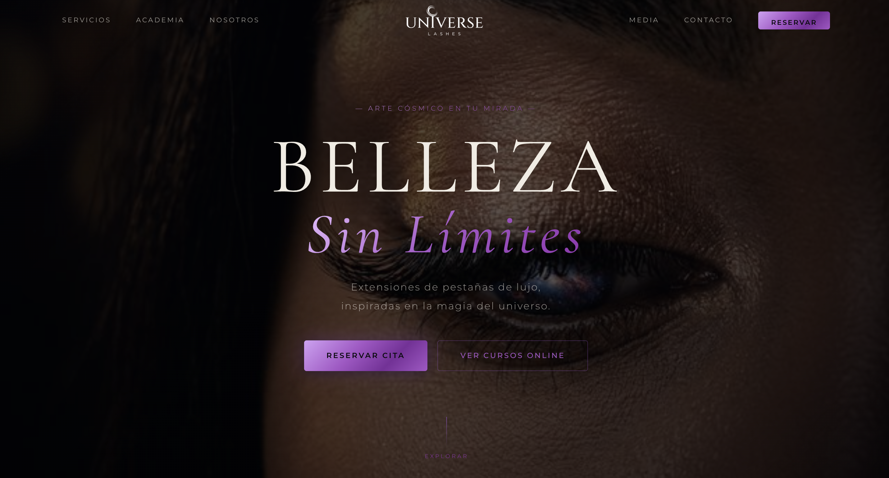
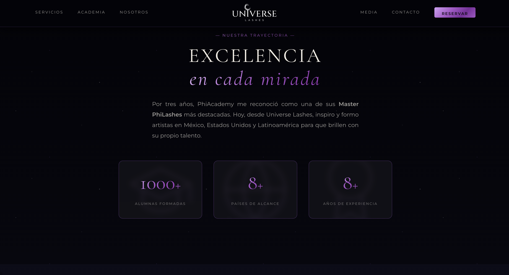
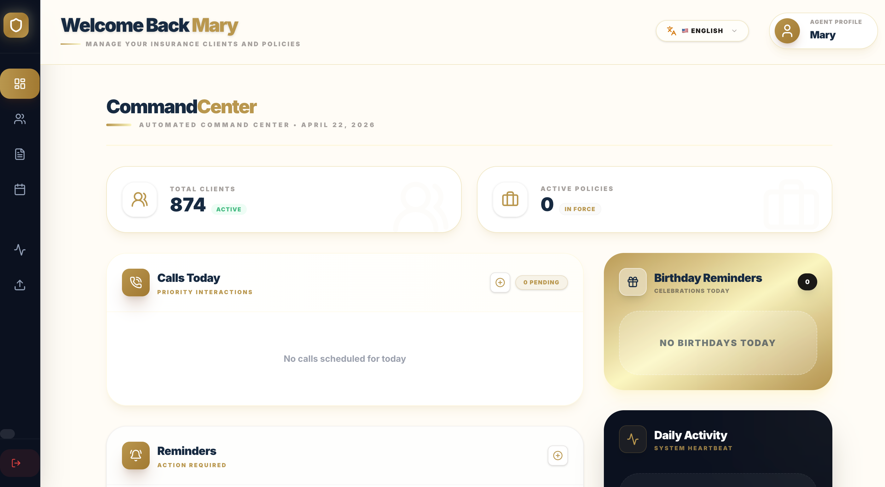
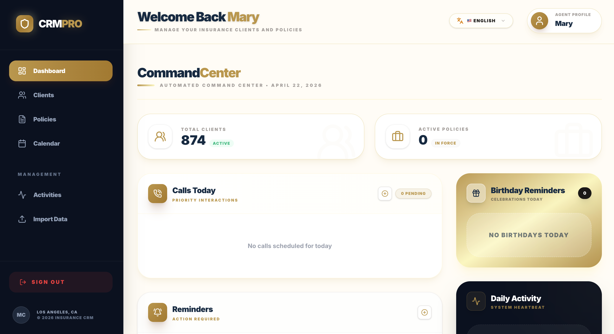
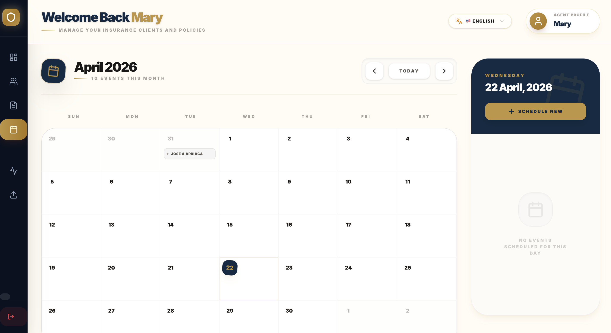
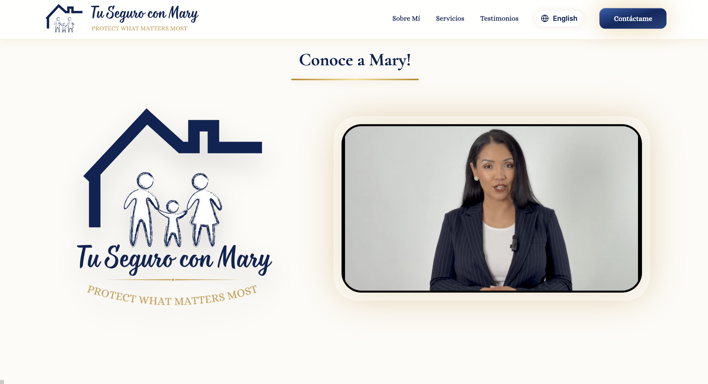

Visión
Digital
Contenido · Operaciones · IA · Web3






Contenido · Operaciones · IA · Web3

Sobre mí
Más de 10 años construyendo ecosistemas digitales en la intersección de Web3, inteligencia artificial y cultura latina. Especialista en contenido estratégico, automatización operacional y comunidades de alto impacto. Basado en Cancún, México.
Read More →Especialidades
Narrativas que conectan marcas con audiencias en el ecosistema digital. Voz auténtica, impacto medible.
Flujos inteligentes que multiplican la capacidad operacional de equipos. Tecnología al servicio de las personas.
Estructuras ágiles que convierten visión en resultados medibles. Ejecución con claridad y velocidad.
Construcción de ecosistemas digitales y culturas de colaboración en la frontera de la descentralización.
Presencia Digital
Perfil Profesional
Trayectoria profesional, conexiones estratégicas y presencia en el ecosistema empresarial digital.
Código & Desarrollo
Repositorios, proyectos open-source y exploración técnica en el límite de la innovación digital.
Comunidad
Ecosistema de creativos y builders construyendo el futuro del trabajo y la cultura digital latinoamericana.
Tecnología IA
Dashboard de señales e inteligencia artificial para el profesional mexicano del futuro.